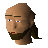

Master fisher

| Config name | master_fisher |
| NPC id | 308 |
| Combat level | hidden |
| Options | Talk-to |
| Wander range | 3 tiles from spawn |
| Defined in | scripts/skill_fishing/configs/fishing_guild/fishing_guild.npc |
Master fisher
The man in charge of the fishing guild.
Show all 1 spawn on the world map → Open in knowledge graph →
Locations
| Area | Coordinates | Level | Count | Map |
|---|---|---|---|---|
| Fishing Guild | 2611, 3393 | 0 | 1 | view |
Dialogue
Master fisherHello, I'm afraid only the top fishers are allowed to use our premier fishing facilities.
Master fisherHello, welcome to the fishing guild. Please feel free to make use of any of our facilities.
Referenced in scripts
scripts/skill_fishing/scripts/fishing_guild.rs2